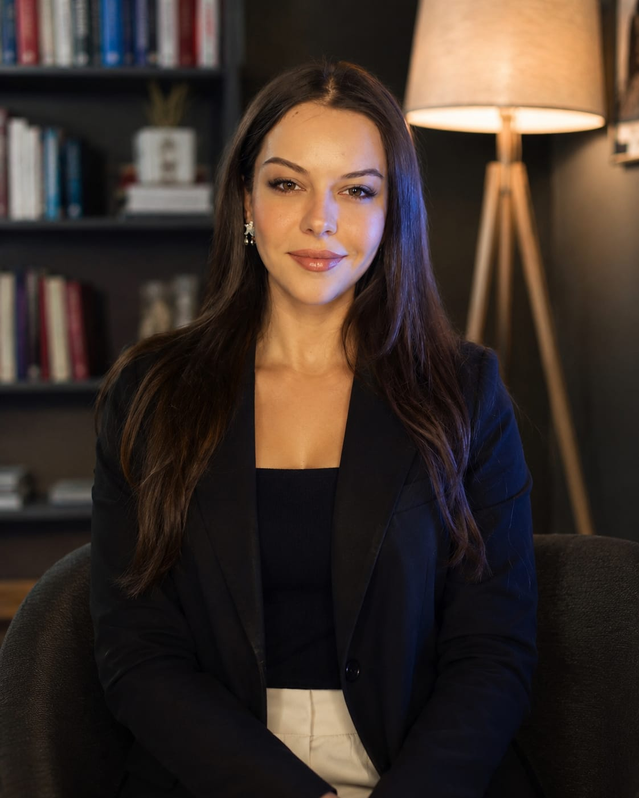

Kendinize ayırdığınız zaman, iyileşmenin ilk adımıdır.
Yargılamayan, güvenli bir alanda; kaygı, ilişki zorlukları ve hayatın getirdiği değişimlerle birlikte yürüyoruz. Yüz yüze ya da online — size uygun olan biçimde.
Size uygun destek biçimini birlikte belirleriz
Her danışanın ihtiyacı farklıdır; ilk görüşmede birlikte en uygun çerçeveyi oluştururuz.
Bireysel Terapi
Kaygı, evlilik ve ilişki problemleri, tükenmişlik, özgüven, yas ve hayat geçişleri üzerine kişiye özel çalışma.
50 dk · Yüz yüze / OnlineÇift Terapisi
İletişim tıkanıklıkları, güven ve yakınlık üzerine çalışan, yargısız ortak bir alan.
100 dk · Yüz yüze / OnlineOnline Görüşme
Şehir dışında ya da yoğun tempoda olanlar için güvenli video görüşme seçeneği.
50 dk · Türkiye ve yurtdışı
Ayşe Ülkü Güvener, Psikolog
Yetişkin danışanlarımla çalışırken temel ilkem, karşımdaki kişinin kendi hızında ve kendi diliyle anlatabileceği güvenli bir alan kurmak. Bilişsel Davranışçı Terapi, Şema Terapi, Duygu Odaklı Terapi ve Çözüm Odaklı Terapi yaklaşımlarından beslenen eklektik bir çerçeve kullanıyorum.
- Lisans — Atılım Üniversitesi, Psikoloji (2014) (%100 İngilizce)
- İleri Düzey Eğitimler ve Süpervizyonlar — Bilişsel Davranışçı Terapi, Şema Terapi, EMDR
- Çalışma Alanları — Bireysel ve çift terapileri
İlk adımdan itibaren şeffaf bir süreç
Terapiye başlamak kararsızlık getirebilir — süreç boyunca her adımda ne olacağını bilmenizi isterim.
Anamnez Formu
Seanstan önce size özel bir anamnez formu gönderilir. Doldurduğunuz bilgiler sayesinde ilk seansa girmeden önce sizi tanımaya başlarım.
Değerlendirme
İlk 2-3 seansta geçmişinizi ve şu anki ihtiyaçlarınızı birlikte haritalandırıyoruz.
Düzenli Seanslar
Belirlenen sıklıkta, güvenli ve tutarlı bir çerçevede çalışmayı sürdürüyoruz.
Gözden Geçirme
Belirli aralıklarla ilerlemeyi birlikte değerlendirip süreci yeniden şekillendiriyoruz.
Gizlilik ilkesiyle, izin alınarak paylaşılmıştır
Kendimi hiç yargılanmış hissetmeden anlatabildiğim ilk yer oldu. Seanslar arasında bile taşıdığım o güven duygusu fark yarattı.
Çift olarak yıllardır tıkandığımız bir noktayı birkaç seansta konuşabilir hale geldik. Yönlendirmeler net ve zorlayıcı değildi.
Online seansların yüz yüze kadar etkili olabileceğini düşünmezdim. Esneklik ve samimiyet bir arada mümkünmüş.
Psikoloji üzerine kısa yazılar
Zaman zaman paylaştığım kısa yazılar. Daha fazlası Instagram sayfamda.
Kaygıyla baş etmenin ilk adımı: fark etmek
Kaygı bir düşman değil, bir sinyaldir. Onu bastırmak yerine anlamayı öğrendiğimizde, günlük hayat üzerindeki etkisi azalmaya başlar.
Instagram'da devamını okuyun →Çiftlerde iletişim neden tıkanır?
Çoğu zaman sorun "ne söylendiği" değil, "nasıl duyulduğu"dur. Sağlıklı iletişim, önce kendi ihtiyacımızı tanımaktan geçer.
Instagram'da devamını okuyun →Nefes çalışmaları gerçekten işe yarar mı?
Basit bir nefes egzersizi, sinir sistemini birkaç dakika içinde sakinleştirebilir. Terapi seansları arasında da uygulanabilecek küçük bir araç.
Instagram'da devamını okuyun →Instagram'dan takipte kalın
Haftalık güncel içeriklerle Instagram'dan beni takip edebilirsiniz — kaygı, ilişkiler ve farkındalık üzerine kısa paylaşımlar.
@psikologulkuguvener'ı Takip EtYouTube'dan videolar
Kanalımdan seçtiğim bazı videolar. Oynatmak için görsele dokunmanız yeterli — sayfa açıldığında otomatik başlamaz.


Merak ettikleriniz
Bireysel seanslar ortalama 50 dk. sürmektedir. Çift görüşmelerinde ise bu süre 90 dakikadır.
Bu durum tamamen danışanın ihtiyacına göre değişmektedir. Dolayısıyla net bir sıklık tarif etmek mümkün değildir ki danışanın süreç içindeki gelişimine göre de değişebilir.
Sizi tanımaya, gelme sebebinizi anlamaya ve birlikte çalışıp çalışamayacağımızı değerlendirmeye odaklanan bir görüşmedir.
Araştırmalar birçok konu için online terapinin yüz yüze kadar etkili olabildiğini gösteriyor. Güvenli bir video platformu üzerinden görüşüyoruz.
Randevudan en az 24 saat önce WhatsApp veya telefon üzerinden haber vermeniz yeterli.
İlk adımı atmak için hazır olduğunuzda, buradayım.
Randevu talebinizi WhatsApp üzerinden iletin, 24 saat içinde dönüş yapalım.